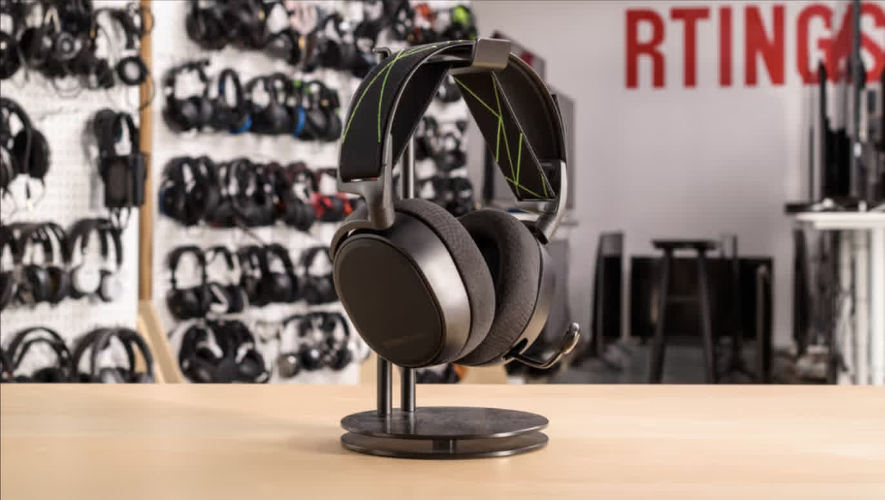
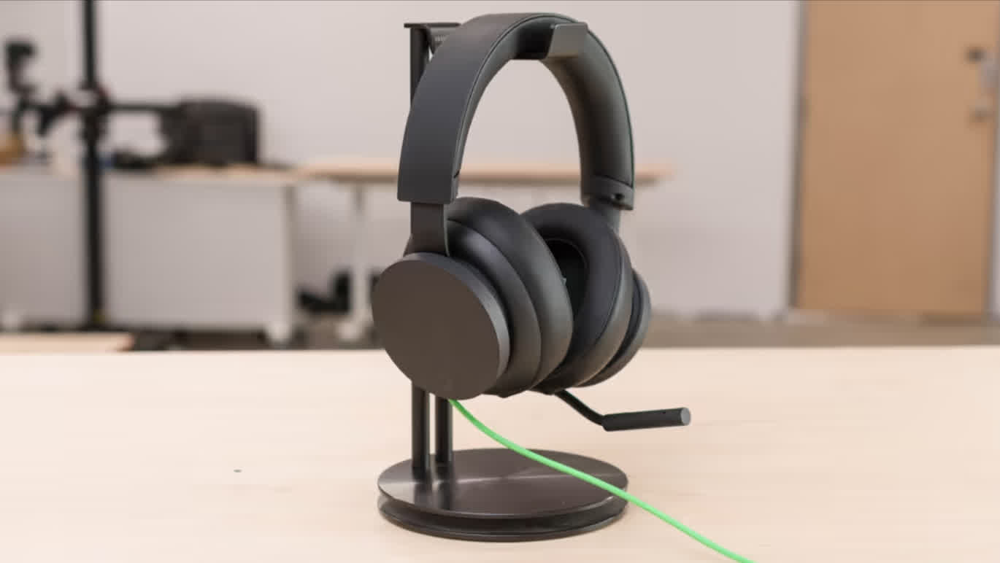
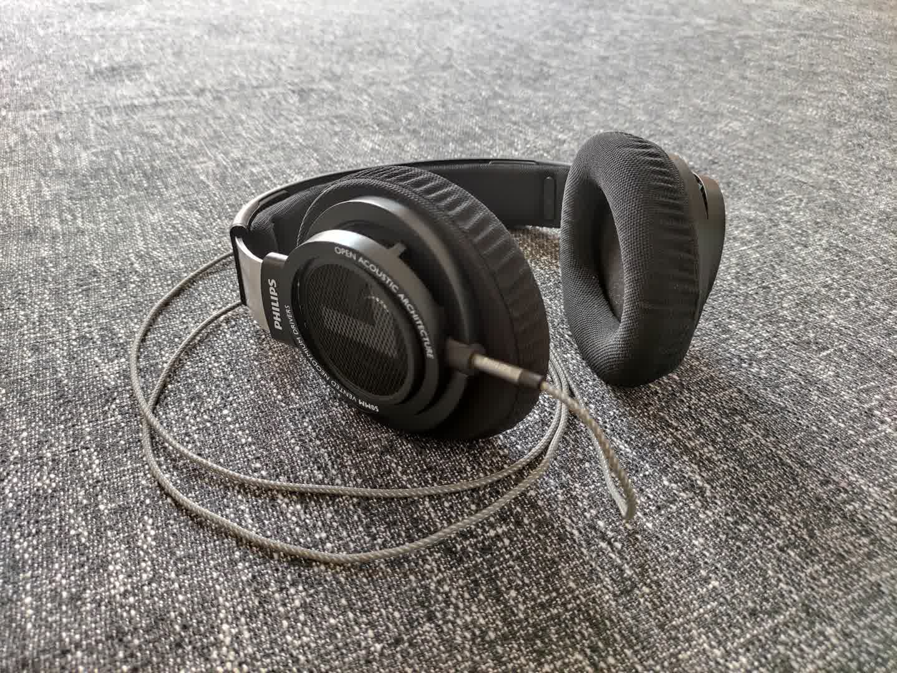
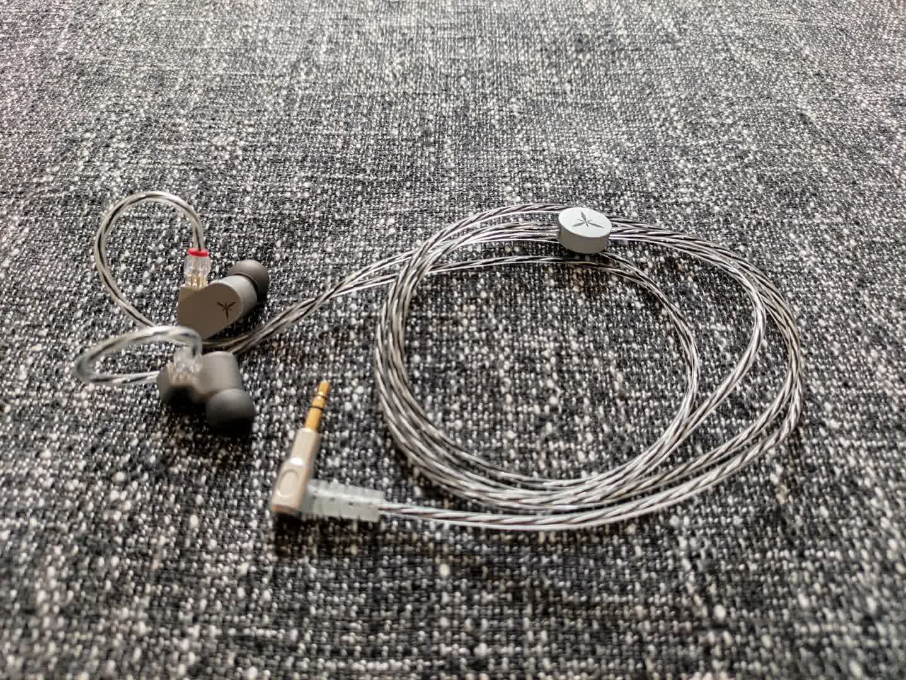
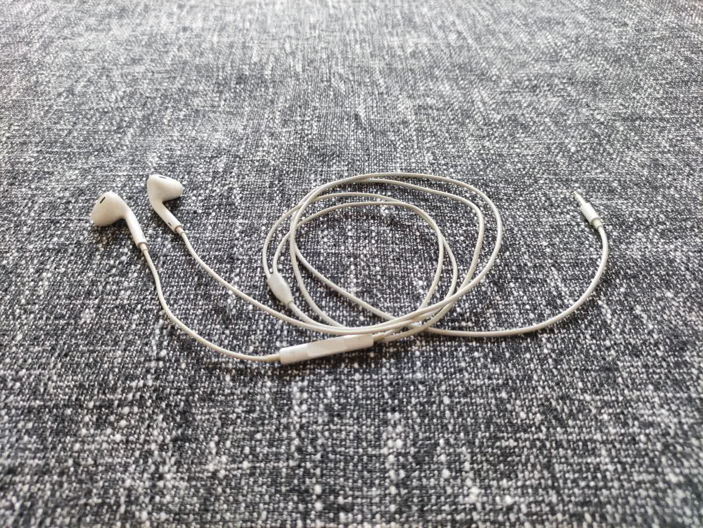
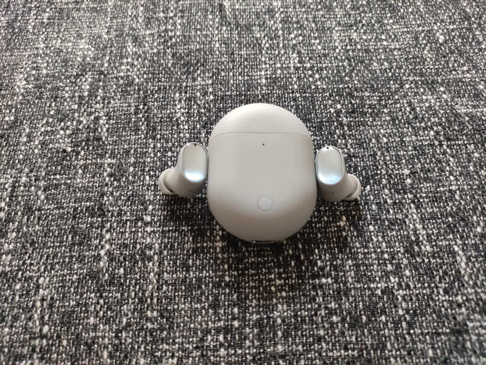

自用耳机盘点
最近几个月看了不少耳机相关的内容，初步了解了一些耳机的参数指标以及选购方案，同时也给自己使用的耳机进行了一波更新换代。本文就简单盘点一下自己之前用过的和现在正在使用的耳机，内容完全基于个人的使用体验。
已退役
赛睿 Arctis9x

主要是为了无线连接 xbox 而购入。买之前看了不少网上的评价，包括视频评测以及 RTINGS 网站上的测试，感觉很不错，但是这耳机并没有国行版本，而且海外版售价高达 200 美元，对我而言实在是太贵，就在淘宝花 398 购入了一副所谓的“9成新”的“洋垃圾”。
单就产品本身的素质来说，我觉得还是很不错的。尽管作为游戏耳机，但它的音乐表现依然非常出色，三频的表现十分均衡。参考 RTINGS 网站上对于 9x 的评测，其中 Neutral Sound 项评分高达 7.8 分并给出了 “satisfactory” 的评价。麦克风质量也相当不错，这根可伸缩的麦克风虽小，但却拥有优秀的收音质量和降噪能力，不过我也只是拿到手的时候测试了一下，并没有怎么使用。佩戴方面，耳机头梁采用了松紧带的设计，使得佩戴时不至于压头。耳罩不算很透气，夏天佩戴可能会比较热，但好在相对柔软，网上普遍说赛睿 arctis 系列这套模具比较夹头，我感觉也稍微有点，但在可接受的范围之内。总之，作为游戏耳机，我对 9x 的表现还是相当满意的。
但由于是二手产品，电池不可避免的有一定程度的损耗，我这副看上去损耗还比较大，官方标称的 20 小时续航，我实际使用大概只能撑六七个小时。另外，使用了不到一年之后，连接耳机头梁和发声单元的转轴就出现了松动的情况，最开始也没怎么在意，但结果是越用越松，直到耳机已经无法稳固佩戴，晃动耳机还能听到断裂的塑料碎片的声音，应该是转轴内部物理结构的损坏。上网上一看，原来是比较普遍的现象，就挺无语的。尝试在淘宝找耳机维修，发现价格还挺贵的，想想还是算了，只能无奈将其退役了。
Xbox 官方有线头戴

9x 退役之后，就想着找一个接替它的游戏头戴，在使用 9x 的过程中，我发现无线对我而言好像并不是那么重要，而且无线耳机还得时刻关注电量，以及考虑长期使用后电池损耗的问题，因此我这次主要把目光放在了有线头戴上。
在雷蛇噬魂鲨有线和 Xbox 官方有线的纠结中，我最终还是选择了后者。现在想想，主要原因可能还是因为 Xbox 的外观设计更合我意以及期待官方配件的玄学加成（？？）。旋钮式音量调节、可弯曲收纳的麦克风以及 Xbox 标志性的绿色线材共同构成了这副耳机极简主义的设计。至少在外观部分，我还是比较喜欢的。
但耳机的实际使用体验不能说糟糕，却也很难让人满意。佩戴方面，耳罩是蛋白皮材质，触感还算 ok，也不夹头，但可能正因为不夹头，耳机的佩戴牢固性主要依靠压在头上的头梁来提供，佩戴时间稍长头部就会有很明显的不适感，因此佩戴方面的体验是很不理想的。音质表现也是完全没有达到要求，无论是风格还是素质都和之前使用的 9x 有比较明显的差距。调音风格上，9x 整体是偏向中高频的，听上去会比较亮，而 Xbox 有线则是偏向于中低频，声音非常的沉闷，刚拿到手听的时候就感觉非常不适应，与我的听音偏好很不匹配。素质上来说，9x 基本是完爆 Xbox 有线，毕竟二者其实本就不是一个价位段的产品，无论是解析力还是声场，前者相比后者都有非常明显的优势。之前我有对比过在游戏《荒野大镖客1》中同一个场景二者的声音表现，结果就是能够在 9x 中听到的一些非常微弱、具有方向感的环境声在 Xbox 有线中与游戏的场景音乐混作一团，丢失了大量细节。
最终，还是决定挂闲鱼出掉了。
原道系列
由于本人晚上睡觉时有收听电台的习惯，因此一副价格便宜、纯听个响的功能性耳机很有必要。因此号称听了触发“悔恨之泪”的原道就成为了我的首选。
原道系列这几年我也陆陆续续买了好多副了，包括最早散装的原道无迹，以及后来二次元封面的原道酱。最早的散装版本现在仍然在售，不过个人不太推荐，主要原因是线材质量不太行，我有好几副都是用了几个月之后出现了线材老化的情况，然后随之而来的就是耳机只有一边出声，不得不进行更换。后面出的原道酱在线材质量上有很大提升，我手里这条铜线版本用了一年多依然正常。不过作为我睡觉时佩戴的耳机，佩戴舒适度必然也要考虑其中，原道的这款平头塞采用了与经典的森海塞尔 mx500 相同的模具，声学结构设计上就很优秀，可能这也是原道在如此低的价位具备还不错的声音表现的重要原因，但是其在佩戴舒适度方面实在一般，耳机腔体不算小，长时间佩戴的情况下能感觉到由于塑料腔体与耳道硬接触而产生的硌痛感，戴上海绵套能相对缓解，但海绵套又很容易松动，时不时就会脱落，比较麻烦。
后来也有尝试过他家的 x39 微动圈，但是佩戴实在不牢固，稍微翻个身可能就掉了，另外入耳式也不适合长时间佩戴，容易出现中耳炎的症状，因此最终放弃。
现役
飞利浦 SHP9500

由于个人打游戏还是比较习惯头戴式耳机，因此在上述两幅头戴都退役之后就想着找一副音质出色、佩戴舒适的替代品。在各大论坛和评论区逛了一段时间，发现了一个反复被提到的名字：飞利浦 SHP9500，同时了解到这是一副开放式头戴，由于我之前并没有听过开放式头戴耳机的声音，对此比较好奇，加上价格也不算高，因此我也没有过多犹豫，就在闲鱼花 170 多淘了一副成色很不错的。
到手试听了一下，发现与此前听过的封闭式头戴的感受截然不同，声音非常通透干净，声场极其开阔，用通俗的语言来形容就是你能感受到各种乐器的声音分布在你耳朵的不同方位，临场感十足。这样开阔的声场也非常适合游玩大型 3A 游戏，能够很大程度上增加代入感。但是开放式也有很大的局限性，就是糟糕的隔音性能以及严重的漏音问题，这也意味着这类耳机的基本只能在比较私人的空间和场合使用，比较遗憾。
另一个令人印象深刻的点便是它的佩戴体验，个人使用过的头戴耳机不多，9500 绝对是其中佩戴最为舒适的无之一。耳机的可调节范围很大，加上透气且足够大的耳罩，使得大部分人都能通过简单调整获得一个比较舒适的佩戴感受，既不夹头也不压头，连续佩戴数个小时也不会感到疲劳。
最后要吐槽的一点就是原装线材虽然质感不错，但实在是太长了，足足有 3 米，我在使用了一段时间后还是嫌麻烦，自己买了一根飞利浦的 1.5 米编制线材，做工还算不错，与 9500 搭配也比较合适。
水月雨 兰

其实单论音质，9500 已经完全能够满足我的需求了，但是毕竟是开放式头戴，使用场景非常有限，就想着再入一副音质出色、方便携带、能够让我出门在外享受音乐的耳塞式耳机。作为我的候选产品的有 Nicehck DB2、兴戈 EW200、水月雨 竹2，以及我最终选择了的水月雨 兰，原因无外乎两点：平直中正的调音和优雅的外观。
首先是音质，购买前看网上评价说兰整体的调音取向是偏监听向的，低频不够有力，但个人平时听 ACG 音乐多一些，主要偏向于中高频，因此调音方面还算比较符合我的听音取向。拿到手后果然如此，并且解析力很强，不同乐器之间的分离度做得非常好，除了物理结构所限的声场外，整体听感已经很接近 9500 了，足以胜任个人的便携音乐耳机。
促使我选择兰的一个另外一个很重要的原因便是它的外观，当时在产品介绍页面第一眼看到便喜欢上了。不仅在于耳机腔体极简风格的设计，更在于原装线材与其共同搭配所表现出的一体性。线材的颜色本就与耳机本体风格很搭，还在分线处和插头部分使用了粉末冶金工艺，并配上兰标志性的 logo，进一步增强了耳机的质感，整体外观非常符合我的审美。
苹果 Earpods

个人现役的功能性耳机，也是我现在日常使用最多的耳机。
作为功能性耳机，佩戴舒适度必然是首先需要考虑的问题，earpods 在这方面可谓是相当优秀。轻盈的重量、贴耳的腔体以及光滑的材质共同造就了近乎无感的佩戴体验，以至于直到今天仍然有相当多的厂商模仿 earpods 的外观设计，可以说以一己之力开辟了半入耳式这个全新的赛道。
虽说个人主要把它当作功能性耳机来使用，但这并不意味着 earpods 的声音表现不行，相反，它的三频表现足够均衡，足以满足个人的大多数的影音需求。另外得益于开放式的设计，earpods 作为一副耳塞式耳机，拥有比其他封闭耳塞式耳机更加开阔的声场，整体的听感也更通透。
另外虽然个人使用的不多，但 earpods 这个不起眼的线控麦克风也值得一说。这个麦克风虽小，但却拥有相当不错的收音质量，参考 RTINGS 上的评分，earpods 的 Recording Quality 项高达 8.1 分，这个成绩已经达到了很多游戏耳机的水平，足以应付语音通话和线上会议的需求，缺点就是噪音抑制一般，需要在尽量安静的环境中使用。
官方 149 元的售价肯定称不上足够便宜以至于当消耗品来使用，但由于这款耳机已经发售多年，并且质量足够出色，以至于在二手市场上的保有量非常可观，基本上 50 ~ 60 元的价格就能淘到一副成色很不错的。因此只要能够接受二手，earpods 还是一个相当具有性价比的选择。
红米 Airdots3pro

红米的这副 TWS 还是 21 年的时候买的，但是个人使用的其实并不多。
耳机的质感还算比较出色，佩戴体验也很不错，比较牢固且舒适。声音表现放现在来看是比较糟糕的，整体的听感比较闷，即使切换到高音增强模式也没有太大改善，当然也可能与个人的听音喜好有关，总之对我而言，拿它来听音乐并不是一个好的选择。但毕竟是注重便携的 TWS，音质方面我也没有抱太高的期望，主要还是使用体验方面的问题。首先便是续航，我这副尽管使用并不频繁，但单次续航大概只有 3 ~ 4 个小时了，如果全程开启降噪或通透模式的话肯定会更低，加上充电仓后的总续航时间个人没有统计过，不过应该也不会太乐观。此外，不知道是什么原因，我总感觉在开启降噪模式后时不时会出现左右耳压不一致的情况，不知道是不是软件 bug，总之相当影响体验。最后就是耳机麦克风貌似只支持通话时调用，其他应用无法调用，因此诸如微信视频通话和录音等场合只能使用手机自带麦克风，原因不明。
虽说 airdots3pro 的使用体验放今天来看并不理想，但我目前并没有打算更换，毕竟我现在还是更习惯有线耳机即插即用、不用担心电量问题的省心感。
 微信
微信 支付宝
支付宝